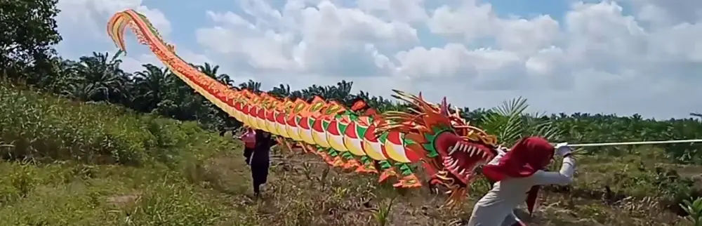

Layangan Naga: Menguak Keunikan dan Rahasia Penerbangannya di Langit Yogyakarta
Dipublikasikan pada 12 Agustus 2025

Akhir-akhir ini, kita mungkin sering melihat video-video menarik di media sosial yang menampilkan kemeriahan anak-anak bermain layangan naga. Layangan unik ini sangat populer di kalangan anak-anak di sekitar Bantul, Daerah Istimewa Yogyakarta. Permainan ini biasanya dimainkan di puncak musim kemarau, saat kondisi angin stabil dan tidak ada hujan atau petir.
Berbeda dengan layangan pada umumnya, layangan naga dibuat dengan merangkai banyak sirip menjadi satu kesatuan panjang, menyerupai bentuk naga. Untuk menambah keindahan, layangan ini dihiasi dengan berbagai kombinasi warna, kepala, dan ekor naga. Pemandangan ini sangat menarik, apalagi saat layangan naga berhasil terbang di angkasa.
Prinsip Terbang dan Kekuatan Gaya Angkat Layangan Naga
Keunikan layangan naga tidak hanya terletak pada bentuknya yang artistik, tetapi juga pada desain sirip-siripnya. Ratusan sirip yang dirangkai ini memiliki sudut yang sudah diatur sedemikian rupa. Ketika terkena angin, sirip-sirip tersebut akan menghasilkan gaya angkat yang kuat, mirip dengan prinsip gaya angkat pada sayap pesawat.
Namun, karena bentuknya yang sangat panjang, layangan naga membutuhkan hembusan angin yang cukup besar untuk bisa terbang. Selain itu, diperlukan tenaga yang kuat untuk menerbangkan dan menahan layangan ini saat sudah mengudara. Saking kuatnya gaya angkat yang dihasilkan, kadang ada anak-anak yang bisa duduk di bagian kepala naga sambil ikut terbang!
Kerja Sama Tim dan Lokasi Menerbangkan Layangan Naga
Untuk menerbangkan dan mengendalikan layangan naga yang berat dan panjang ini, biasanya dibutuhkan kerja sama tim yang solid. Anak-anak yang memainkannya sering kali juga membuat sendiri sirip-sirip layangan ini. Sungguh, semangat kerja keras sudah terlihat sejak dini!
Jadi, bagaimana? Sudah pernah menyaksikan layangan naga secara langsung? Selama puncak musim kemarau, Anda bisa menemukan layangan ini diterbangkan di berbagai lokasi di Daerah Istimewa Yogyakarta, seperti di sekitar Jalur Lintas Selatan, Pantai Samas, dan Lapangan Kebonagung, Imogiri.
Video singkat tentang penerbangan layangan naga bisa Anda saksikan di bawah ini. Semoga bermanfaat!